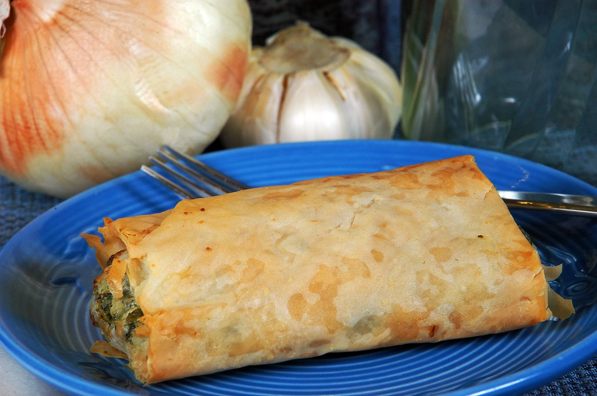

Spanakopita Recipe

Spanakopita is a traditional Greek savory pie made primarily with spinach, feta cheese, onions or scallions, eggs, and seasoning, all encased in layers of crispy phyllo dough. It is a popular dish in Greek cuisine and is often enjoyed as a snack, appetizer, or main course.
The preparation of spanakopita involves creating a filling by sautéing spinach with onions or scallions, then mixing it with crumbled feta cheese, eggs, and various herbs such as dill or parsley. The filling is then layered between sheets of phyllo dough, which are brushed with olive oil or melted butter to achieve a golden and crispy texture when baked.
There is a "fasting" (νηστίσιμη; "nistisimi"), or vegan, version of spanakopita, eaten during Lent and other religious fasts. This version has spinach, onions or green onions, other green herbs like dill, parsley, or celery as filling and uses olive oil and a little wheat flour but no eggs or dairy products. The mixture is oven-baked until crisp.
Ingredients:
- 1/2 cup olive oil
- 1 large onion, finely chopped
- 2 bunches green onions, finely chopped
- 2 cloves garlic, minced
- 1 kg fresh spinach, washed and chopped
- 200g feta cheese, crumbled
- 4 eggs, lightly beaten
- 1/4 cup fresh dill, chopped
- 12 sheets phyllo dough
- 1/2 cup melted butter or olive oil (for brushing)
Steps:
- Adjust oven rack to lower-middle position. Preheat oven to 200°C. Brush a 9-inch glass pie plate (either deep-dish or standard size will work with this recipe) generously with olive oil and set on a parchment-lined rimmed baking sheet.
- In a large bowl, combine chopped greens, chopped herbs, 1/4 cup olive oil, salt, and black pepper. Massage together to gently wilt the greens, then set aside.
- In a small sauté pan over medium heat, add 1 tablespoon olive oil, scallions, and garlic and cook until wilted, about 5 minutes. Add the hot mixture to the greens and combine to further wilt the vegetables. Add the trahanas (or your substitute of choice) and egg and thoroughly combine. Once everything is well mixed, fold in the crumbled feta.
- Unroll thawed phyllo and keep it covered with a moist kitchen towel while working. Working with 1 sheet at a time, lay phyllo so that it is centered in the pie pan with the excess draping over the rim and brush generously with about 1 tablespoon olive oil. Repeat with 3 more sheets of phyllo, each sheet placed perpendicular to the previous one, brushing with olive oil before adding the next.
- Add greens mixture to phyllo-lined pie. Fold excess phyllo over greens and drape remaining 2 sheets of phyllo over the top. Drizzle with more olive oil. Slice into portions using a serrated knife. Bake in preheated oven until golden brown, about 45 minutes. Allow to cool at least 15 minutes before serving.
Home